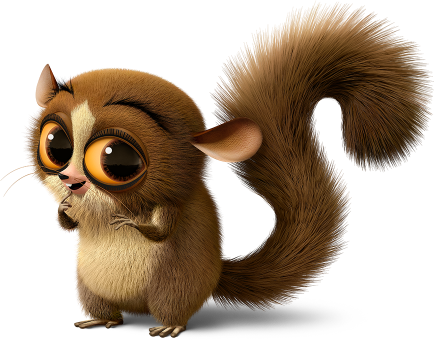

<
MortTheMouseLemur
Mort the Mouse Lemur!

< Mortdecai "Mort" is a very cute and sort-of-innocent mouse lemur. He is somewhat bothersome toward the other zoo animals. While the character he admires and reveres, King Julien, dislikes him the most, the zoo inhabitants dislike Julien and care more for Mort (although not by much). He is a supporting character in the films, a major character in The Penguins of Madagascar, and the tetartagonist of All Hail King Julien. He loves King Julien's feet which started when he saw King Julien using them to kick some Fossa in the first episode of All Hail King Julien. In fact, he loves his feet so much that he can rip down a tree while sleeping for them, as seen in "Two Feet High and Rising." King Julien also hates it when Mort touches his feet. Mort's first major role is in "Two Feet High and Rising." He is protected by a "force field" of ignorance and can't feel pain, but he still hates drowning, as seen in "Assault and Batteries." He laughs hysterically a lot. (In Madagascar: Escape 2 Africa, while being chased by a shark and laughing at the same time, he says "Why am I laughing?!?") He likes things even if he doesn't know what they are. He says "I like [fill in]!". (i.e. In "Tangled in the Web," he says "I like computers!" despite not having a clue as to what a computer is. "I don't have to know to like.")